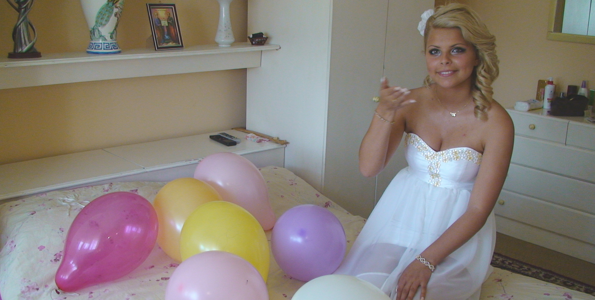
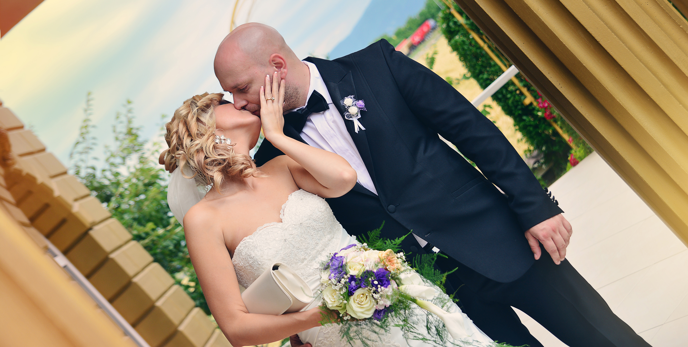
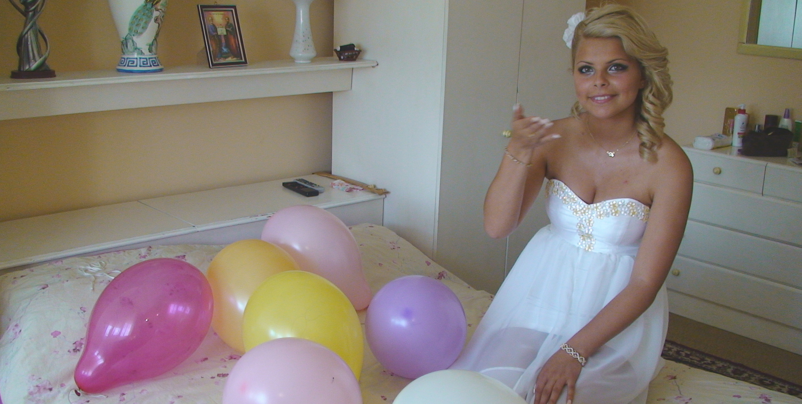
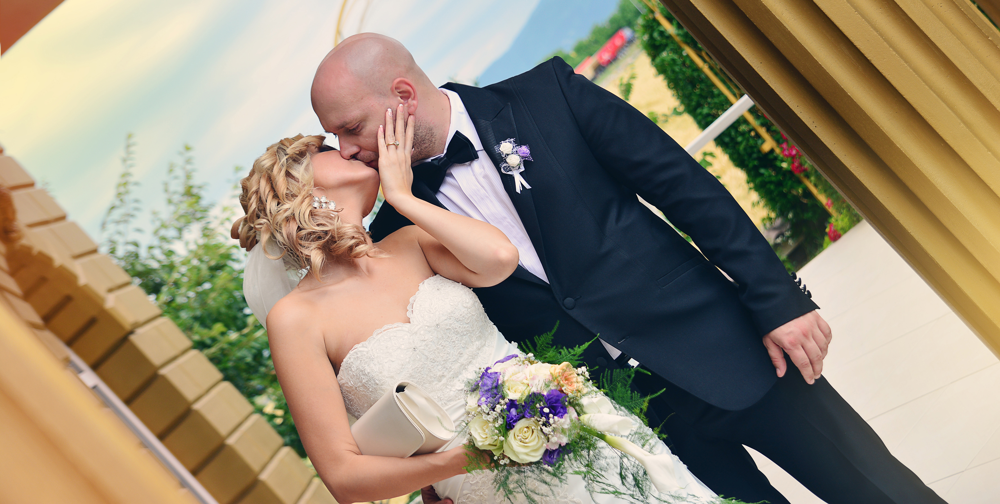

Видеозаснемане на сватби, семейни тържества и рекламни клипове
Занимавам се с видеозаснемане от 1994г. Работя в тандем с професионални фотографи. Особено внимание отделяме на заснемането на сватбени тържества. Те са неповторим празник в живота на всеки човек и това събитие заслужава да бъде запазено завинаги. Положителните емоции са преобладаващи за всички – младоженци, кумове, гости и роднини. Ние ще запазим вълшебството на този момент, за да можете винаги да изпитате отново емоцията на вълнуващото „Да“. Видеозаснемането на сватбения филм е тази своеобразна машина на времето, която ще ви припомня любимите моменти. Разбира се, младоженците са главните герои и всичко е според техните желания. Ако доскоро заснемането се изразяваше само в държане на камерата и следване на събитията, то вече говорим за ново ниво на професионализъм – предварителен сценарий, работа с екип, различна видеооператорска техника, качествена видеообработка... Това прави нашата дейност комплексна и много по-професионална. Видеозаснемането все повече се доближава до киноизкуството, предлагайки истински майсторски продукти. Техниката, която използваме е на водещите марки в бранша: Sony - DSLR камери, ZEISS сменяеми обективи, стационарно топло осветление, микрофони, аудио рекордери последно поколение. Така постигаме и гарантираме перфектно качество на звук и картина, за да заснемем по най-добрия начин вашия специален ден.